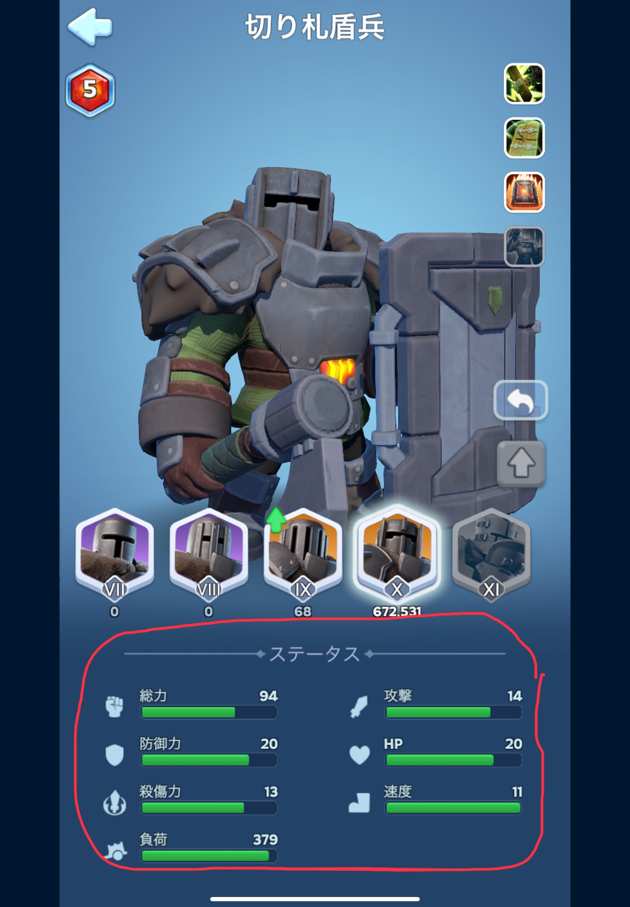
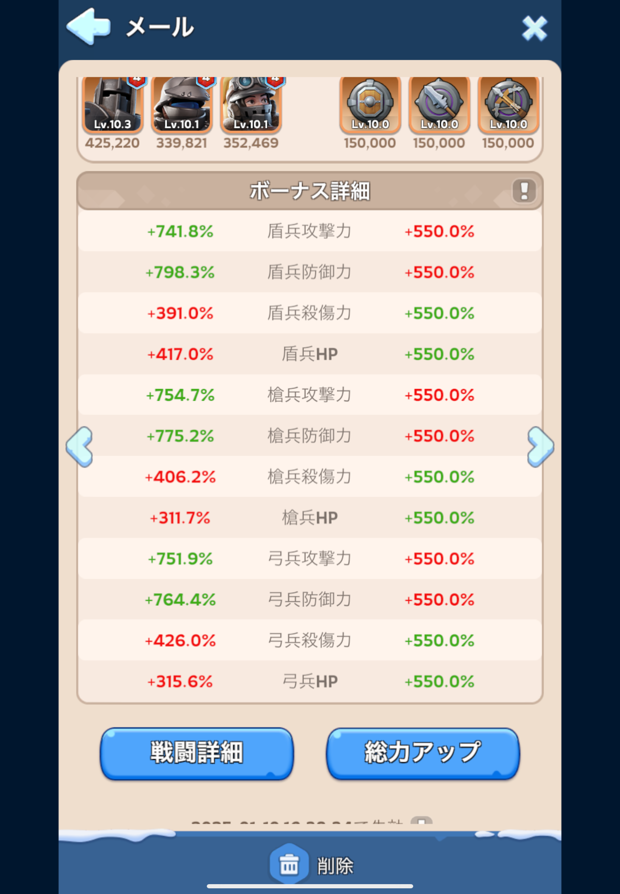
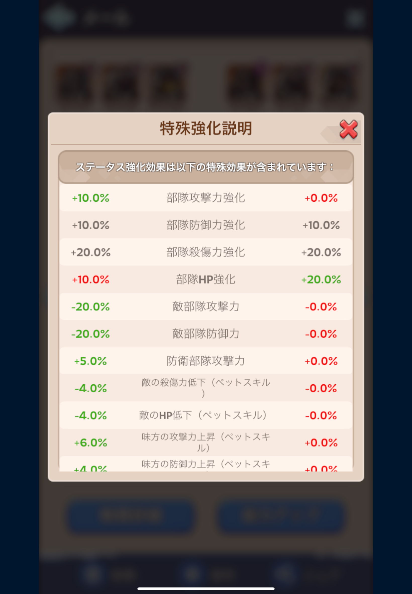

元動画: コレを知らないと強くなれない！超重要な戦闘ステータス・バフについて徹底解説！！【ホワイトアウトサバイバル / whiteout survival】
盾、槍、弓ごとに
がある(速度と負荷は戦闘に関係しない(多分)ので割愛)

敵の防御力を上回る場合、与ダメージが上昇
※敵の防御力と同等の場合は相殺
敵の攻撃力を上回る場合に被ダメージが減少
※敵の攻撃力と同等の場合は相殺
敵のHPに与えるダメージの基礎値
ダメージを受けるとHPが減少
| 味方 | 敵 | |
|---|---|---|
| 攻撃力 | ↔ | 防御力 |
| 防御力 | ↔ | 攻撃力 |
| 殺傷力 | ↔ | HP |
| HP | ↔ | 殺傷力 |
バフは戦闘ステータスに対する補正値のこと
戦闘レポートから確認できる(戦闘レポートの見方はこちら)
このバフが高いほど戦闘時のステータスが高くなる
がすべて加算された値(下の画像の値は、後述の特殊バフの反映された値)
上記が、基礎バフに対して乗算で反映される

※同種の特殊バフが存在する場合、加算してから適用する
ex. 自分のバフで+20%、相手のデバフで-10%のときは(20-10)=10%を適用する
追加ステータス = (基礎バフ + 特殊バフ) + (基礎バフ * (特殊バフ / 100))
例えば盾兵攻撃力が
基礎バフ: 500%
特殊バフ: 20%
相手のデバフ: 10%
のとき、特殊バフは20-10=10の10%が適用されるので
追加ステータス = (500 + 10) + (500 * (10 / 100)) = 560となる
英雄スキルのバフは戦闘レポートには反映されない
追加ステータスに対して英雄スキルのバフも反映したものが実際の戦闘時のバフとして使用される
バフ反映後ステータス = 元ステータス * (1 + (追加ステータス / 100) + スキル係数 * (英雄スキル / 100))
補足